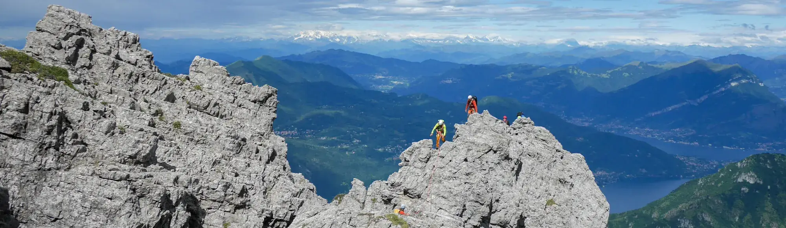
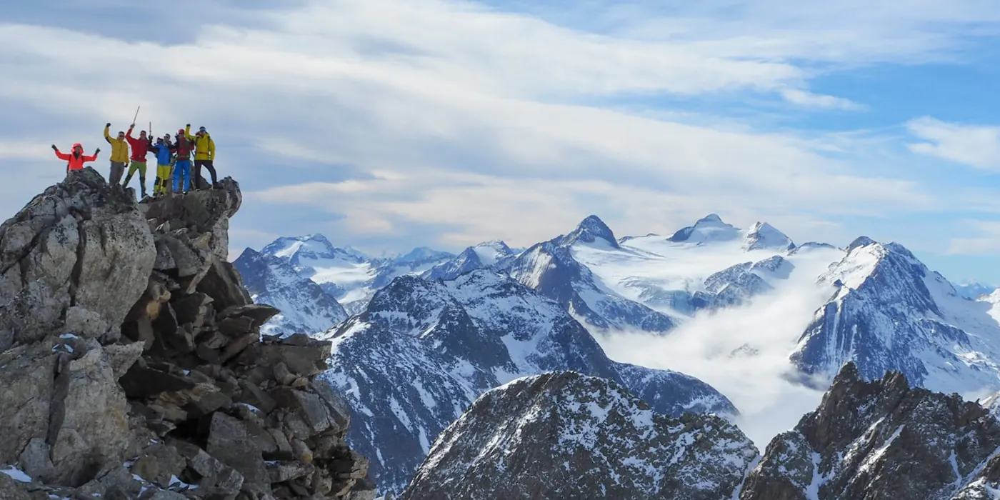
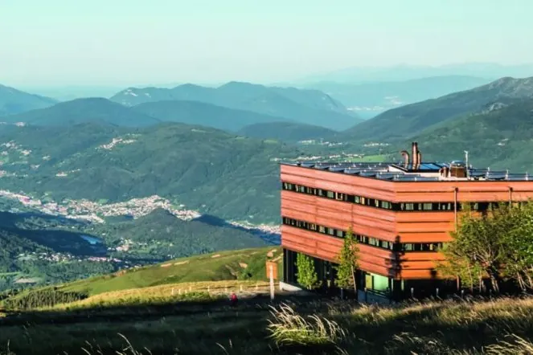

Discipline
Escursionismo, alpinismo, arrampicata, sci alpinismo, racchette e cascate di ghiaccio.
Fondata a Bellinzona l’11 aprile 1886, la Sezione Ticino del Club Alpino Svizzero conta quasi 3000 soci e propone un’attività varia, pensata per tutte le età: dai più giovani ai seniori.


Escursionismo, alpinismo, arrampicata, sci alpinismo, racchette e cascate di ghiaccio.
Corsi di introduzione ad alpinismo, sci alpinismo, racchette e arrampicata in ambiente.
Vedi i corsi
La sezione gestisce sei rifugi: Campo Tencia, Cristallina, Adula, Motterascio (Michela), Monte Bar e Baita del Luca.
Coordina il soccorso alpino nel Sottoceneri, si impegna per la tutela dell’ambiente alpino e promuove la cultura della montagna.
Un comitato coordina le diverse attività, affiancato da cinque dicasteri e dal lavoro volontario dei soci.

Programma delle attività, sito web, un periodico semestrale e l’annuario che racconta la vita della sezione.
I documenti di riferimento della sezione sono raccolti nella pagina Documenti.